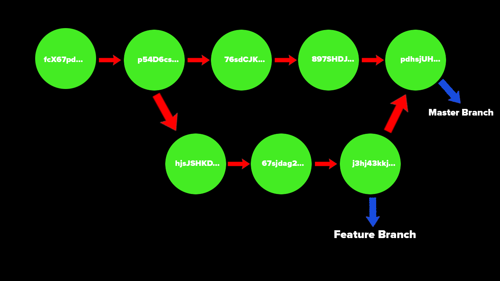

Git Branches
Each commit within a branch has a hash and each commit references some parent commit that is before it. Commits have messages that detail what happened in that version of the file/project.
Branches allow us to "detach" from this linear timeline of making changes to create our own version of the project. From here we can do whatever we want to the project without affecting the main work. If you find something that works or something you want to add, you can just bring this timeline back into the original one.
The first image is a representation of the linear branch master. The second shows what it looks like when we break off into a feature branch.


Master Branch
The master branch is the default branch name. This is usually the most official and main branch that everyone on the project uses. The master branch is usually what is deployed/used for the final versions of a project and what the public will see.
However, this does not always have to be the master branch. You can rename this branch to anything you want, or create others and get rid of it.
master or main
There was a push from GitHub to change the name from master branch to main branch for name convention reasons. Both are still used today and Git still uses master over main which is used by GitHub. Either of them perform the same function, however, you may notice both.
What is HEAD?
You will see a reference to HEAD a lot when making commits or changes to your branches with Git/GitHub. HEAD is a pointer to your current location in the repository. This is basically where you are in the timeline of the project edits. This HEAD will point to a specific branch reference and refers to a branch pointer.
- Branch Pointer - a reference to where a branch currently is in the timeline. It may be ahead or behind the main timeline.
Viewing Branches
You are able to view all branches that have been created inside a repository once created. An * will be located to the left of the branch you are currently accessing.
To see this, you are going to use the command git branch -a to list all branches.

Creating a New Branch
To create a new branch use git branch <branch-name>. This command is just going to create the branch, this will not switch you over to the new branch right away.
To switch to another branch you want to use the command git switch <branchname>.
You can also create a new branch and switch to it using the switch command with git. To do this the command you use is
git switch -c <branchname>
This command will create the new branch based off where you are right now and then take you to the new branch.
Merging Branches
A branch works in its own self contained context. However, at some point we want to add the new features we coded back into the original project.
To do this, you use the git merge command.
The master branch is usually the source branch, so that is what is going to be used here. The 'master' branch should be the most stable and working branch in the repository.
This means it is good to create a branch off of master to work on your features and once you know they work, you can add them back to the master branch. Adding these changes back to the master branch is called merging.
You want to move to the receiving branch before you merge the two together. This means we want to be in the master branch before we merge the feature branch into it.
Consider the two branches master and feature. We want to switch to the master branch, then merge the feature branch into this one. This type of merge is called a fast forward merge where we are not worrying about any other merges or conflicts with other people.
Order of commands:
git switch master
git merge feature
The merged branch (feature) will stay. This just updates the master branch to match the feature branch.
Generate Merge Commits
When doing merges, you may be missing new commits to the master branch. This starts the conversation of merge conflicts which can happen a few ways.
- Two people changed the same line of the master branch and try to merge in their changes.
- There are no conflicting changes, but lines were moved around.
The second one is easier to explain and would just require a commit message for the merge to explain what changed/happened. The first is a much larger issue that is further discussed.
Merge Conflicts
This happens when two or more people modify the same two files in different branches and try to merge them back to the same branch.
When this happens, you must decide what to keep/remove from that merge. These changes have to be made manually and a prompt will open showing you the code you must choose to keep or remove. These merge conflicts look as such...
<<<<<<<<<<< HEAD
My name is Mark and I like cats.
===========
My name is Mark and I DO NOT LIKE cats.
>>>>>>>>>>> FEATURE
From here, you choose what to change and what to keep. The first message is what you have on your local file and the second one is what is uploaded to GitHub. After you know what you want to keep you remove the <<<<<<< HEAD and similar added syntax.
Then you can commit and push these changes with updating the conflict.
The process is as follows:
- Open file(s) with merge conflicts.
- Edit to remove conflicts. Decide what to keep and/or remove.
- Remove conflict markers.
- Add changes.
- Commit changes.